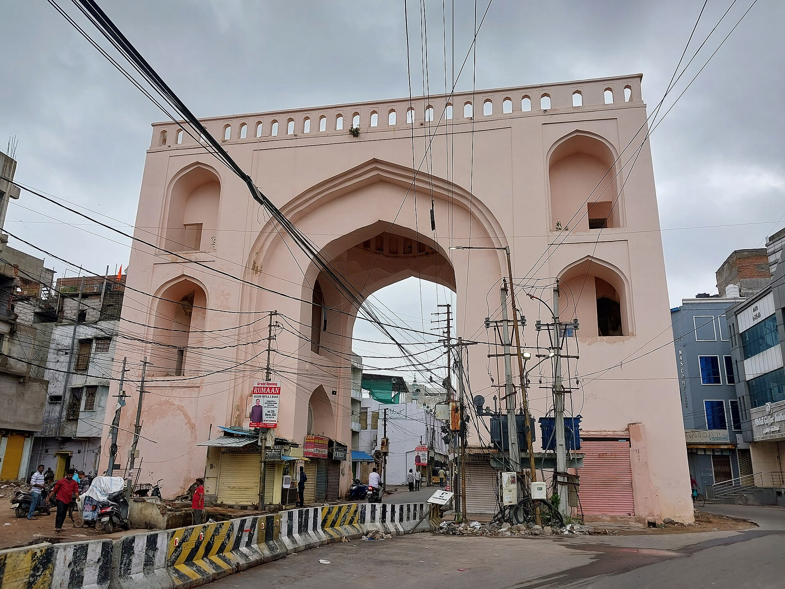
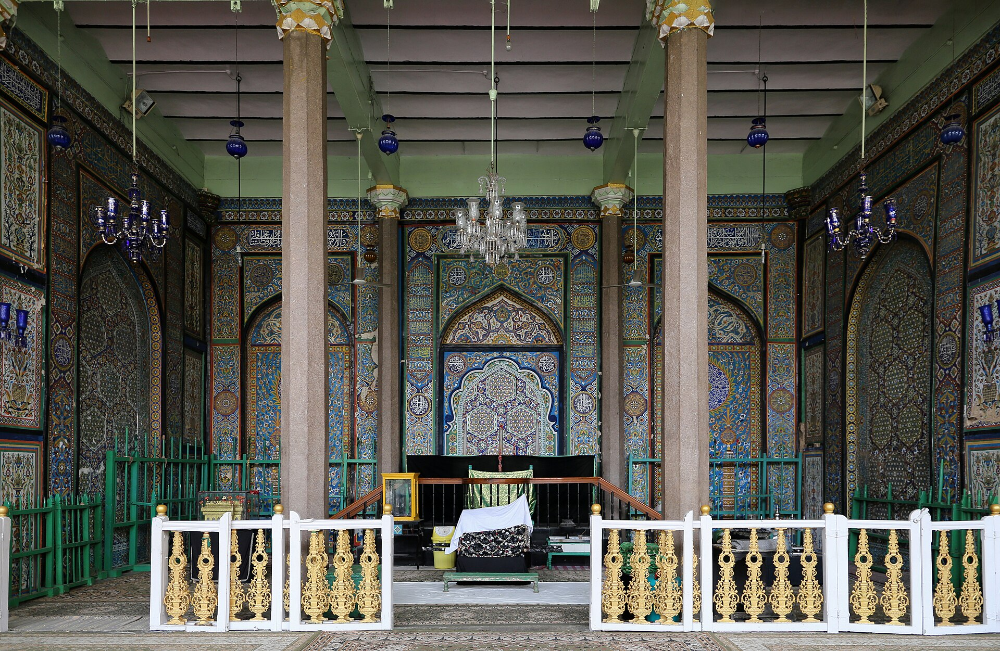
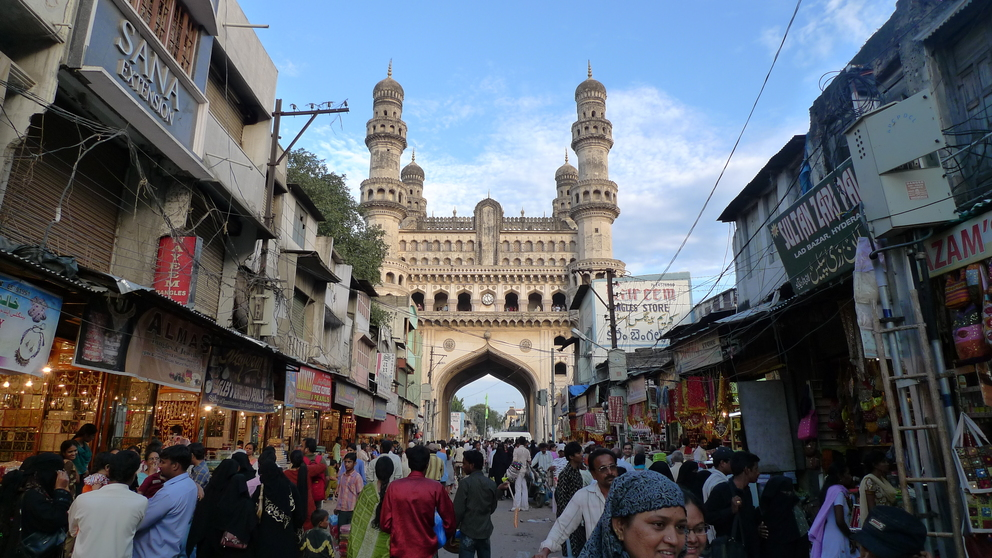
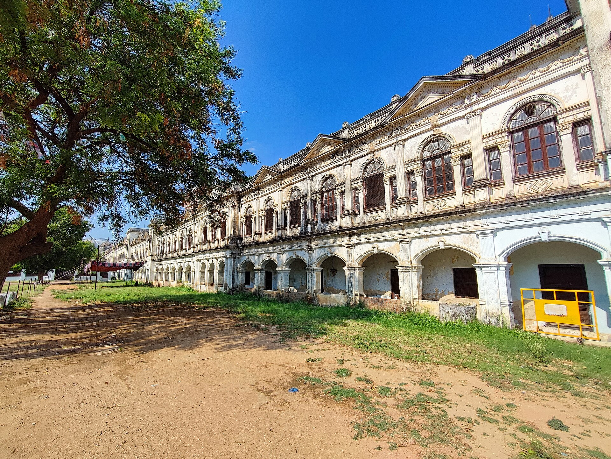
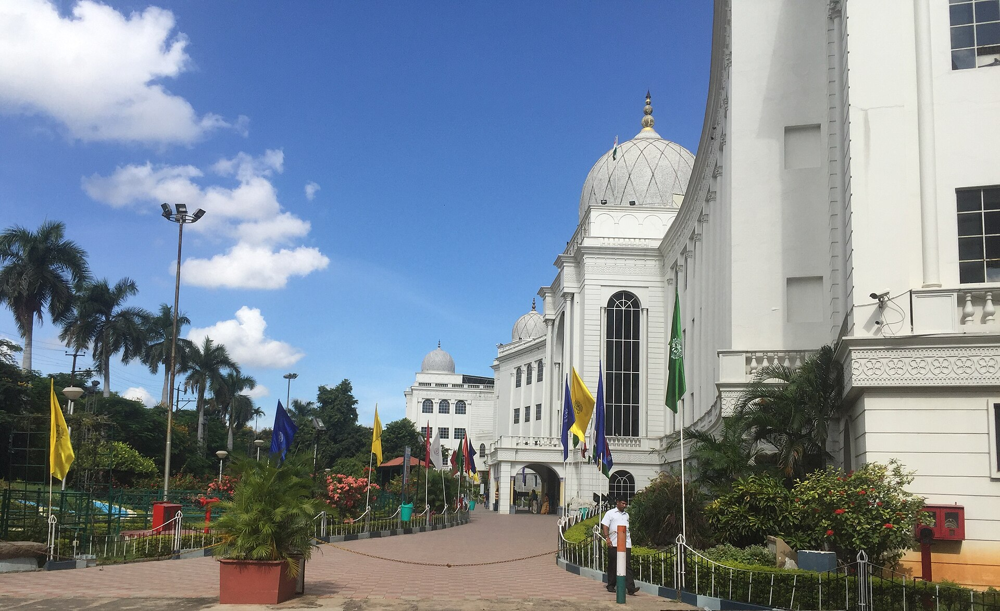
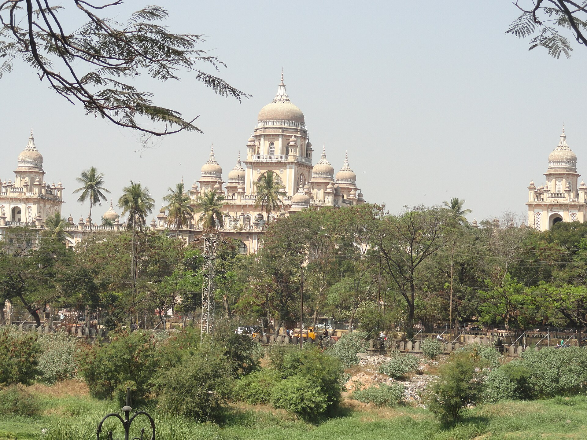
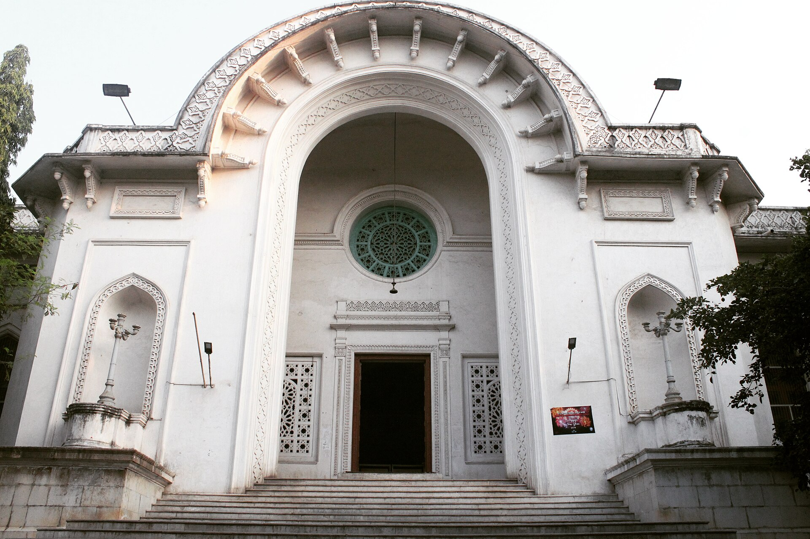
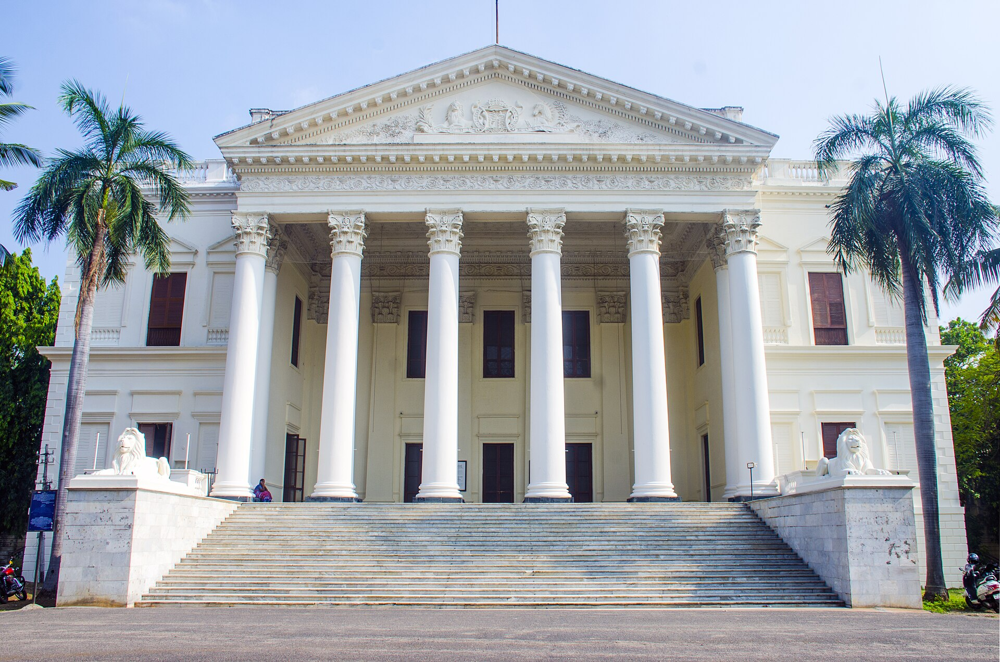
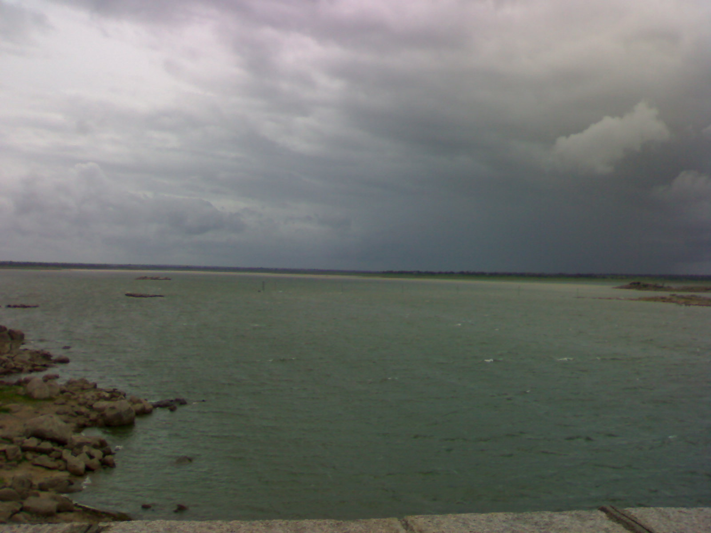
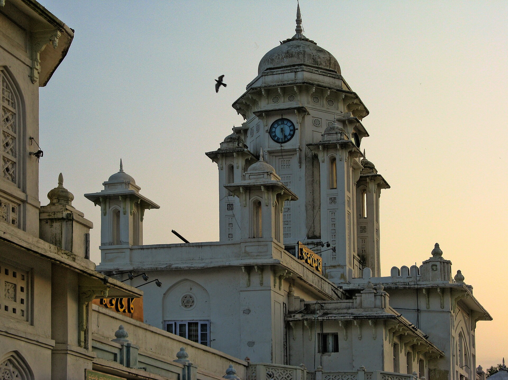

A planned city laid out on a grid on the south bank of a small river, because the fortress had run out of water. Four centuries later it was the capital of the largest princely state in India, ruled by a man on the cover of TIME as the richest in the world, with its own currency, its own railway, its own army and its own airline.
1591: the city on the river
Golconda was full. A fortress is a poor place to keep a population. The granite gave no wells worth the name, everything had to be lifted, and in a crowded season the fever went through the garrison and the bazaar together. In 1591 Muhammad Quli Qutb Shah, fifth of his line, laid out a new city five miles east on the south bank of the Musi — a planned gridiron with a great ceremonial crossing at its heart, designed with his minister Mir Momin Astarabadi.
At the crossing he raised the Charminar: four arches and four minarets of 48.7 m, on a square base of 20 m, with a mosque of forty-five prayer spaces on the top floor and a cistern and fountain below. North of it went the Char Kaman, four gateways on the cardinal axes with the Gulzar Houz fountain at their crossing; nearby the Badshahi Ashurkhana, whose tilework was finished in 1611; and eventually the enormous Mecca Masjid, begun 1614 and not completed until 1694 — seventy-seven years, and by then under Aurangzeb.
The founder was a poet as well as a planner. He wrote in Persian, Telugu and Dakhni, and his collected verse runs past eighteen hundred pages — one of the earliest substantial divans in the language that became Urdu. His ghazals are still sung at Hyderabadi weddings. His prayer at the foundation was: make my city full of people, as you keep the river full of fish.
LegendBhagmati, and the name of the city
Everyone in Hyderabad knows the story: the young prince rode nightly across the Musi to the village of Chichlam to see a dancer named Bhagmati, the Purana Pul of 1578 built for those crossings, and when he became king he built the city for her and called it Bhagnagar, renaming it Hyderabad after she took the title Hyder Mahal.
Scholars split three ways. Some hold she never existed: there are no manuscripts, miniatures, inscriptions, coins or graves of the period attributable to her, and a favourite queen would have had a grand tomb, which does not exist. Others accept her but derive Bhagnagar from bhag or bhagya — garden, or good fortune. Others tell it as it is told.
The rival explanation of the present name is simply pious: Haydar is a title of Ali, making Hyderabad the lion's city. Both stories are still told, often in the same breath.
In depthWhy the Charminar?
The Archaeological Survey states that it is widely accepted the monument commemorates the end of a plague — that the sultan prayed for deliverance and built where he prayed.
The competing reading makes it the ceremonial centrepiece of a planned city, marking the crossing of its two principal axes. A third ties it to the turn of the Islamic millennium, 1000 AH.
All three may be true at once. It would not be the only monument in this history that was town planning and prayer in the same act. A minaret was struck by lightning in 1670 and repaired for about 58,000 rupees; the clock faces went up in 1889.
The Mughal century, and the man who walked away
After 1687 Golconda became a Mughal province, and Aurangzeb spent the next twenty years chasing Marathas across a countryside his own armies had wrecked. He died at Ahmadnagar in 1707 and was buried at Khuldabad in an open grave, roofless by his own instruction, paid for out of money he had earned copying the Quran.
Delhi then devoured eight emperors in seventeen years, with king-makers raising and blinding and strangling them in turn. The viceroy of the Deccan, Chin Qilich Khan, watched the whole performance from a safe distance and declined every invitation to join it. He took the office of Vizier when it was pressed on him, found it unworkable, and left for the south.
Delhi's patience ran out in 1724 and an army was sent south to dislodge him. He destroyed it at Shakar Kheda and made himself master of the Deccan, and Delhi, having no alternative, sent him the title Asaf Jah and its congratulations. His grandson Nizam Ali Khan moved the capital from Aurangabad to Hyderabad in 1763, which is why this city is a capital and not a Qutb Shahi relic.
Good to knowWhat he said to Nadir Shah
In 1739 the Persian conqueror Nadir Shah sacked Delhi and ordered a massacre in its streets. Asaf Jah is reported to have gone to him and said: you have taken thousands of lives; if you wish to continue, bring the dead back to life and kill them again.
The massacre was stopped. His judgement about his own neighbours was equally unsentimental — the ruler of the Deccan who wants safety and prosperity, he wrote, must have peace with the Marathas, who are the landholders of this region.
The Europeans, and the price of an army
Asaf Jah's death in 1748 opened a succession war that the French and English turned into their own contest. The Marquis de Bussy commanded a French corps of a few hundred Europeans and some thousands of trained sepoys and beat Maratha armies many times its size, and was paid in land, the Northern Circars, four hundred and seventy miles of coast. When he was recalled the Nizam wept in open durbar and called him the guardian angel of his fortune.
The arrangement he left behind outlasted him and every other Frenchman in India — the subsidiary force: small, drilled, foreign-officered, quartered inside the state, charged to that state's own revenue, and taking its orders from somewhere else. Dupleix had the idea, the British made a system of it, and Hyderabad is where it was first shown to work.
Michel Raymond, a Gascon, later built the Nizam a European-drilled army of some fourteen thousand men with its own foundry and powder mills, and was loved enough that Hindus and Muslims called him Musa Ram and Moosa Rahim. To Lord Wellesley, in a year when Bonaparte was in Egypt, this was intolerable. Raymond died in March 1798; under the treaty of September the corps was dissolved, and on 22 October British battalions surrounded the lines and the sepoys laid down their arms without a shot. Hyderabad became the first Indian state to accept a fully defined subsidiary alliance.
Its troops then marched with the British to Seringapatam in 1799, and stood beside Arthur Wellesley at Assaye in 1803 — nine and a half thousand men against perhaps fifty thousand, which Wellington called, long after Waterloo, the bloodiest action for the numbers he ever saw.
By the numbersBerar: the arithmetic of a grievance
Contingent cost
About ₹40 lakh a year — roughly a third of state revenue
What the treaty required
15,000 troops in war — not a standing force in peace
Cost once the British ran it
About ₹24 lakh, with no loss of efficiency
Cantonment excise withheld
About ₹1 lakh a year, for 41 years
Assigned as security
1853, under an ultimatum from Dalhousie
Leased in perpetuity
5 November 1902, at 25 lakh a year
Returned
Never
In depthGribble's own campaign
The author of the history this site is built on spent a decade on the Berar question. His articles in The Pioneer and the Nineteenth Century put it before the British public and led eventually to a debate in Parliament.
His case was that the debt Berar had been taken to secure was largely fictitious: the British had for forty years pocketed the excise revenue of the Secunderabad and Jalna cantonments, money later admitted to be the Nizam's, which over that period roughly equalled the sum claimed. The Resident of the day, Colonel Davidson, wrote that if the two governments' accounts had been dealt with impartially, 'we had no just claim on the Nizam'.
Volume II of Gribble's history breaks off unfinished in the middle of that argument. He died before he could complete the chapter.
Salar Jung
He became minister at twenty-four and held the office thirty years. He inherited a state with no district courts, no police force, and a revenue system in which talukas were auctioned to contractors who lived in the capital and sent deputies to squeeze the districts — deputies replaced so often that a new one was said to ride facing his horse's tail, to see who was coming to displace him. Whole villages stood abandoned, and the fields around them had gone back to scrub.
He began by ending the auction altogether. The state would deal with the man who actually worked the field, at a rate fixed in advance and not revised at a contractor's whim. Then he built the machinery: five subahs and seventeen districts, a treasury, a police force, courts and magistrates in the mofussil, customs and salt services, schools in every taluka, a medical school, a central mint replacing the district ones, the railway from Wadi. Revenue roughly trebled in thirty years and deserted villages were reoccupied.
He also held Hyderabad in 1857 — the year the saying went round British India that if the Nizam goes, all goes. Placards appeared on the city walls; a crowd raised the green standard at the Mecca Masjid and moved on the Residency, and was met with grapeshot from the ramparts and the minister's Arab troops at the gates. In 1860 the British cancelled the debt and returned Raichur, the Doab and Shorapur. They kept Berar.
Cholera took him in one night in February 1883. He was fifty-four, and had spent the previous day showing a visiting Grand Duke around the city he had rebuilt. The Nizam broke down in open durbar; Arabs and Rohillas walked weeping in the procession; the crowd stripped his grave of its flowers to keep something of him.
28 September 1908: the flood
Seventeen inches of rain fell in about thirty-six hours. The first warning came at two in the morning when water topped the Purana Pul; a cloudburst followed at six. The Musi, normally a modest stream, rose through the old city in the dark. Three of the bridges were washed away; more than eighty thousand houses went; a quarter of the population was made homeless; the toll is usually given as around fifteen thousand.
A tamarind tree in the grounds of what is now Osmania General Hospital held about a hundred and fifty people in its branches for more than twelve hours. Among them was the Urdu poet Amjad Hyderabadi, who lost his entire family that night and afterwards wrote Qayamat-e-Soghra, the lesser apocalypse. A plaque at the tree reads: this tree saved 150 lives.
Cities are usually changed by what is built after a flood rather than by the flood, and Hyderabad is the clearest case of it in India. The Nizam brought in the engineer M. Visvesvaraya, whose report concluded that the city's safety had to come from storage above it. Two dams came out of it — Osman Sagar in 1920, Himayat Sagar in 1927, which held the river back and watered the city for the next three generations, and with them a City Improvement Board that redrew the streets the flood had emptied.
The richest man in the world
For most of the twentieth century this was, on paper, the richest household on earth, and in February 1937 an American news magazine put its head on the cover to say so. The Jacob diamond, 184.75 carats and about twice the weight of the Koh-i-Nur, had been mislaid so thoroughly that it turned up in the toe of his father's slipper — after which, by the story Hyderabad tells, it held down his papers. Contemporary estimates put his fortune around two billion dollars, something like two per cent of American GDP at the time.
The frugality alongside it became legend: unironed cotton, socks he knitted himself, a tin plate, the cheapest local cigarettes, guests offered a single biscuit with their tea. He also gave Elizabeth II a diamond tiara and a three-hundred-diamond necklace as a wedding present in 1947, which she wore for the rest of her life.
What he spent on is still standing. Osmania University — founded by firman in 1917 and teaching from 1918 as the first Indian university to teach in an Indian language, with a translation bureau created to produce the textbooks that did not yet exist — with its Arts College modelled on the mosque-college of Sultan Hassan in Cairo. The High Court, the Osmania General Hospital, the City College and Kachiguda station by Vincent Esch; the State Central Library; Moazzam Jahi Market; the Nizamia Observatory; Jubilee Hall. Esch called his idiom 'purist classic with a refined suggestion of Indian character in the beautiful carved brackets'.
And the state itself: its own currency, its own stamps, its own railway, its own army, its own airline. Up to eleven per cent of the budget went on education. His donations crossed every line — a million rupees to Banaras Hindu University, half a million to Aligarh, restoration money for the Ramappa temple, an annual grant to the Golden Temple, funds for Al-Aqsa.
1948
Hyderabad did not accede at Partition. It signed a Standstill Agreement, sought to remain independent, and its politics slid out of the Nizam's hands: the Razakar militia under Qasim Razvi — perhaps two hundred thousand irregulars, only about a quarter with modern firearms — terrorised the countryside, while a communist-led peasant revolt burned through Telangana against the landlords.
Indian troops crossed the frontier before dawn on 13 September 1948. Thirty-five thousand troops crossed at four in the morning against a state force of twenty-two thousand of whom about six thousand were fully trained and equipped. It lasted five days. On the 17th the Nizam announced a ceasefire and went on radio to accept accession; the armoured column entered Hyderabad the next afternoon. Indian losses were fewer than ten killed.
The killing in the districts afterwards belongs to a different order of magnitude from the fighting, and it is the part the state was slowest to look at. The Government of India appointed a committee under Pandit Sunderlal to investigate the communal killings across the districts. Its own conservative estimate was twenty-seven to forty thousand dead, while recording that responsible observers put the figure at two hundred thousand or higher. It found that troops disarmed Muslim villagers while Hindus often kept their weapons, and that in several places armed forces brought Muslim men out of villages and killed them in cold blood. The report was suppressed and became public only around fifty years later. Patel disowned its conclusions.
The Nizam served as Rajpramukh until the states were reorganised in 1956. When he died in 1967 the funeral drew an estimated million people. That signature closed something that had been running for six hundred and one years: an unbroken line of Deccan sovereignty from the officers who crowned one of their own at Daulatabad in 1347, through Gulbarga and Bidar and Golconda, to a room in King Kothi.
In depthThe numbers that are still argued about
1948 civilian deaths: 27,000–40,000 by the Sunderlal committee's own conservative estimate; 200,000 or higher according to the 'responsible observers' the same report cites. It remains one of the least-taught episodes in modern Indian history.
The 1908 flood: about 15,000 is standard, but a figure of 50,000 appears in some of the same sources.
The last Nizam's wealth: about US$2 billion contemporary — against press figures of $230 billion, which are inflation-adjusted guesswork.
The Nizam's jewels: bought by the Government of India in 1995 for ₹218 crore, a figure often misreported as ₹71 crore. They include nearly 2,000 carats of emeralds, over 40,000 chows of pearls, and the Jacob diamond.
Good to knowWhy a landlocked city is the City of Pearls
No oyster has ever been within four hundred kilometres of Hyderabad. What the city does is the rest of the trade: sorting, drilling, stringing and polishing, on stones brought by Arab routes from Bahrain and Basra, under Qutb Shahi and then Asaf Jahi patronage — a business over four centuries old.
The village of Chandanpet outside the city is given over almost entirely to pearl drilling. The last Nizam's own collection was heavy in Basra pearls.
The same logic runs through the city's other imports. Haleem arrived with the Hadhrami Arab soldiers the Nizams recruited from Yemen, who settled at Barkas; it started as the Arabic harees and acquired lentils, fried onions and garam masala on the way. It now holds a GI tag with a defined meat-to-wheat ratio.
LegendThe Nizam who cured snakebite
The sixth Nizam, Mahbub Ali Khan, was believed to hold spiritual power against snakebite, and issued orders that any member of the public who was bitten could approach him directly.
He was routinely woken in the night to treat them. Whatever one makes of the cure, the standing order is documented, which makes this the rare legend with an administrative record attached.
“Make my city full of people, like you keep the river full of fish.”Muhammad Quli Qutb Shah, at the founding of Hyderabad, 1591
Inside the city
The Musi runs west to east across the middle. The Qutb Shahi city is south of it around the Charminar; the Asaf Jahi palaces spread south and west; and the great public buildings of the last Nizam line the north bank at Afzalgunj.
Charminar
1589–1591
Four arches and four minarets of 48.7 m at the crossing of the new city's two main axes, with a mosque on the top floor. Fourteen thousand tonnes of granite, limestone and pulverised marble, on foundations at least thirty feet deep.
Mecca Masjid
1614–1694
Seventy-seven years in the building and finished under Aurangzeb: ten thousand worshippers under fifteen arches, its central arch made of bricks fired from earth brought from Mecca. The Asaf Jahi tombs line its courtyard.

Char Kaman
c. 1592
Four ceremonial arches on the cardinal axes north of the Charminar, with the Gulzar Houz fountain at their crossing — the formal approach to the royal quarter.

Badshahi Ashurkhana
1592; tiles 1611
The royal Shia mourning hall, and the best Persian tile mosaic in the city — completed under Abdullah Qutb Shah two decades after the building itself.

Laad Bazaar
16th c.
The lacquer-and-glass bangle lane running west off the Charminar, and still doing exactly what it was laid out to do four hundred years ago.
Chowmahalla Palace
1750–1880s
Four palaces around formal courts, nineteen Belgian crystal chandeliers in the durbar hall, and a clock in the tower that has been ticking since 1750, wound weekly by one family of horologists.

Purani Haveli
refurbished 1777
Holds the longest wardrobe in the world: 240 feet on two levels, 124 almirahs, served by a hand-cranked wooden lift.
Paigah Tombs
from 1787
Marble smothered in polished stucco jali — screens perforated as family trees, mixing Rajasthani, Mughal and Persian geometry. The Paigahs were the only nobles allowed their own army, courts and palaces.
Falaknuma Palace
1884–1893
Built in the shape of a scorpion, two stings spread as wings, in Italian marble on a hill. Its dining hall seats a hundred and one. The sixth Nizam visited in 1897 and simply stayed; its owner had to give it to him.

Salar Jung Museum
opened 1951
One man's collection, claimed as the largest in the world: the Veiled Rebecca, whose marble veil reads as translucent; a double statue of Mephistopheles and Margaretta carved from one block, one figure on each side of a mirror; and a musical clock whose small figure still strikes the hour to a crowd.
High Court
1915–1919
Vincent Esch's finest: local pink granite with carved red sandstone panels, on the north bank at Afzalgunj, for about twenty lakh rupees.

Osmania Hospital
1918–1921
Facing the High Court across the river. In its grounds stands the tamarind tree that held a hundred and fifty people through the night of the 1908 flood.

State Central Library
1932–1936
Begun as the Asafia Library in 1891 from one nobleman's collection, and given this building for the Nizam's silver jubilee.
Osmania University
firman 1917
The first Indian university to teach in an Indian language. Its Arts College, on sixteen hundred acres at Amberpet, is modelled on the mosque-college of Sultan Hassan in Cairo.

British Residency
1803–1806
A Palladian villa by a Madras Engineers lieutenant, near-contemporary with the White House and strikingly like it. Behind it stood the Rang Mahal, where Khair-un-Nissa lived — the Hyderabad marriage that scandalised Calcutta. It is a women's college now.
Purana Pul
1578
Twenty-two arches, six hundred feet long, fifty-four feet above the bed. Built before the city it leads to, and the only bridge left standing in September 1908.

Osman Sagar
1920
The answer to 1908: a dam ten miles upstream, built on Visvesvaraya's advice so that the city's safety would come from storage above it. Himayat Sagar followed on the tributary in 1927, and between them they supplied Hyderabad's drinking water for generations.

Kachiguda station
1914
Vincent Esch's first Hyderabad commission and the first building here built entirely of concrete — domes and chajjas in a material that had never carried them before.